Manejo de Strings
Y Ejercicios de RPC Round 03
Problem C. Tobby and Query
Dada una secuencia de n digitos, calcular cuantos digitos diferentes hay en el rango [l, r].
Ejemplo:
- Secuencia: 0 2 3 3 7 5 2
- Rango: Valores entre las posiciones 2 y 4
- Respuesta: 2 valores diferentes (2 y 3)
Limites
La secuencia puede tener hasta 100.000 valores. Por cada secuencia, habrán como máximo 10.000 consultas.
Hacer el recorrido sobre la secuencia en cada consulta es muy lento. En el peor caso, se harán 1.000.000.000 de operaciones.
Solución
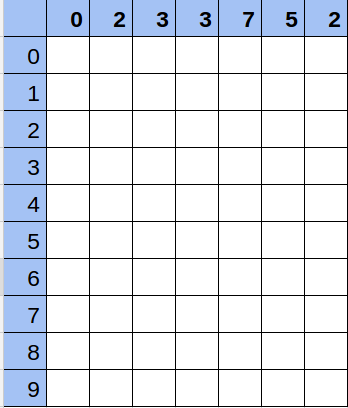Solución
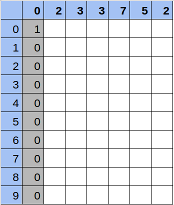Solución
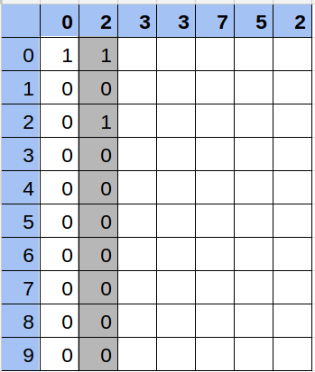Solución
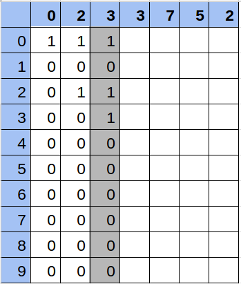Solución
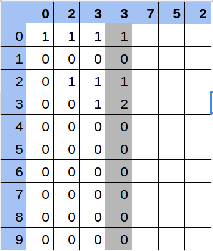Solución
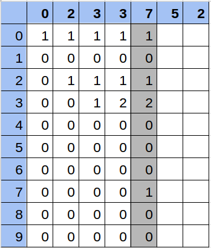Solución
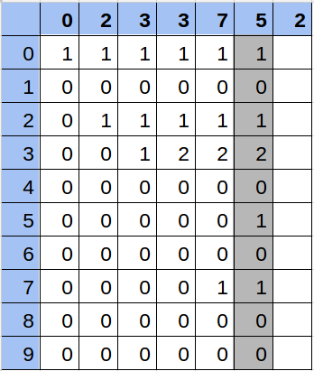Solución

Solución

Hacer todo el cálculo de la matriz conlleva 10 operaciones por cada número, es decir, en el peor caso con una secuencia de 100.000 números, será 1.000.000 de operaciones. Calcular la respuesta de cada consulta se realiza en 10 operaciones.
Problem D. Standard Deviation
Dado un número n, halla la desviación estandar de los primeros n números impares.
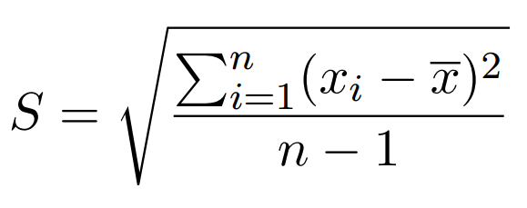Solución
- La media no es necesario calcularla. El promedio de los n primeros impares siempre es igual a n.


Problem E. Tobby and the LED display
Un problema sencillo pero tedioso de programar. Una pantalla de LED's en la cual un text se mueve en cualquiera de las dos direccciones, de a un movimiento por segundo. Indicar cual será su posición final, si nos indican el sentido en el que se mueve, y cuantos minutos han transcurrido.
Tips:
- En los movimientos a la derecha, si se llega al limite, la letra aparece en el inicio.
- En los movimientos a la izquierda, si una letra llega a la posición -1, aparecerá en el final.
- Si T (número de minutos) es mayor al N (número de caracteres del LED) puedo reducir el problema haciendo T = T % N, dado que tras cada vuelta entera la pantalla quedará como en el inicio.
Problem G. Tobby and the line game
No sabemos la razón por la cual funciona. Pero funciona :3
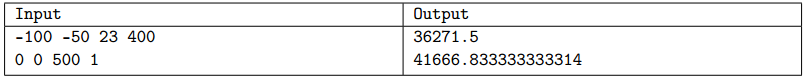Tips
A veces, aún sin entender el enunciado es posible llegar a la respuesta solo analizando las salidas.
En el enunciado mencionaban la formula:

Y las entradas entregaban valores para x1, y1, x2 y y2
Tips
Reemplazando los valores del primer caso en la formula se obtiene 217629, mientras la salida debia ser 36271.5. Si dividimos 217629 entre 36271.5 da 6.
Si realizamos el mismo proceso con el segundo caso, de nuevo la relación entre la respuesta de la formula y la salida es 6.
CONCLUSIÓN: La salida es: reemplazar valores en la fórmula y dividir entre 6. ¿Por qué 6? No lo sabemos, pero funciona.
Strings
String vs. StringBuilder
Java provee dos maneras de manejar cadenas de texto: String y StringBuilder (o StringBuffer).
String
- mas facil de manejar.
- Permite concatenaciones con el signo "+"
- Permite inicializar con String a = "hola";
- Internamente, cada concatenación crea un nuevo objeto.
StringBuilder
- Se maneja como objeto: StringBuilder ab = new StringBuilder();
- Las concatenaciones se realizan con el método append();
- Internamente aumenta el tamaño dinamicamente sin crear nuevos objetos.
String vs. StringBuilder
Comparativa entre String y StringBuilder en ejecución:
TestAlgoritmo KMP
Sirve para buscar una subcadena en una cadena de forma eficiente.

Caso 1: Sin patrón y la letra de fallo es la misma inicial.
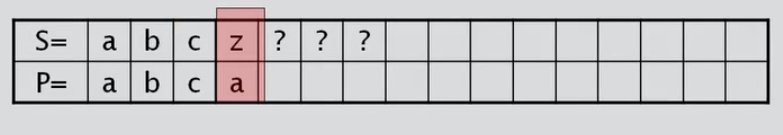Caso 1: Continuo en la siguiente casilla.

Caso 2: Sin patrón y la letra de fallo es diferente inicial.

Caso 2: Continuo en la casilla donde encontré el fallo.

Caso 3: Con patrón y la letra siguiente a la primera aparición del patrón es diferente al caracter de fallo.

Caso 3: Inicio desde la letra siguiente a la primera aparición del patrón.
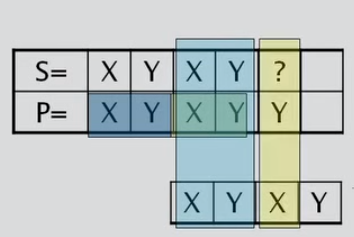Caso 4: Con patrón y la letra siguiente a la primera aparición del patrón es igual al caracter de fallo.

Código del KMP
El código de KMP se encuentra disponible en el repositorio en Github.